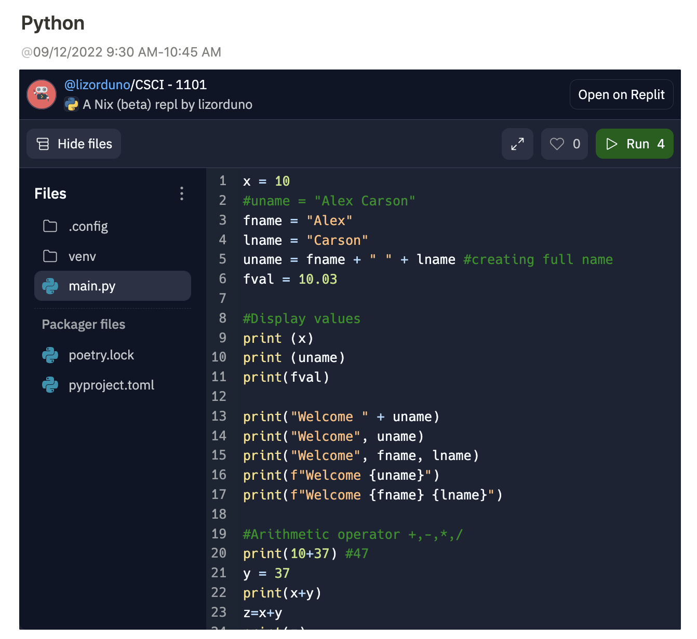
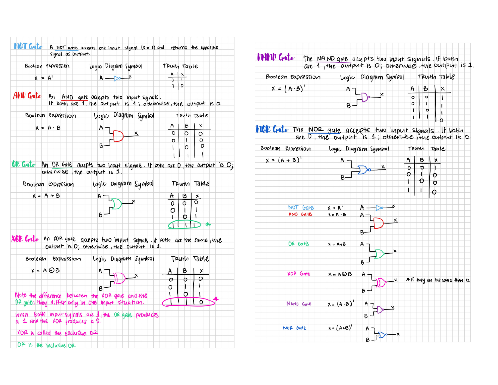

About Me
Hi! I'm Liz, currently a student at University of Texas Rio Grande Valley located in Edinburg, Texas pursuing a Computer Science Degree.
Previously a project civil engineer offering 6 years of earth retention and soil stabilization construction industry experience. Proven history of guiding project success by leveraging exceptional design, construction management and estimating skills. Detailed, organized and hardworking, able to effectively communicate project specifications and procedures with expertise in various design software.
In my free time I like to read about scientific developments, mathematics, and computational mathematics. I also like to take my chances of winning big.
Fun fact! I've been programing for
0 seconds!
Projects
Python

Riplit screenshot of learning to write on Python. Python is a high-level, general-purpose programming language. Its design philosophy emphasizes code readability with the use of significant indentation. Python is dynamically-typed and garbage-collected. It supports multiple programming paradigms, including structured, object-oriented and functional programming.
Logic Gates & Truth Tables

The table used to represent the boolean expression of a logic gate function is commonly called a Truth Table. A logic gate truth table shows each possible input combination to the gate or circuit with the resultant output depending upon the combination of these input(s).
Python Hangman
Hangman has been our most advanced game yet; Lists are values that can contain other values. Methods are functions attached to a value. Lists have an append() method. Strings have lower(), upper(), split(), startswith(), and endswith() methods. The elif statement lets you add an “or else-if” clause to the middle of your if-else statements.